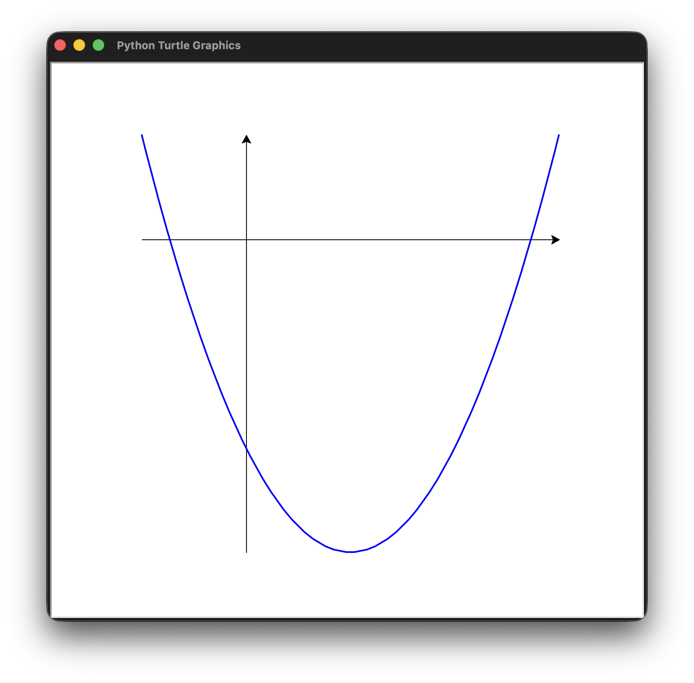
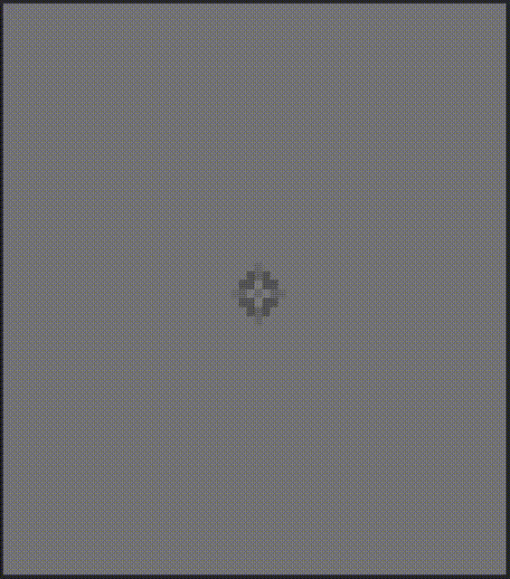

Créez une fonction append() qui prend un tuple et
une valeur à ajouter à sa fin. Comme les tuples sont non modifiables, le
tuple original ne peut pas être modifié mais il est possible de renvoyer
un nouveau tuple contenant les éléments du tuple de départ et celui à
ajouter.
Créez un petit module de manipulation de vecteurs 2D. Dans ce
module, un vecteur sera un tuple de 2 floats. Le module
devra contenir les fonctions suivantes:
add(): renvoie la somme de 2 vecteurs.scale(): renvoie le produit d’un vecteur par un
float.length(): renvoie la norme d’un vecteur.dot(): renvoie le produit scalaire de 2 vecteurs.normalize(): renvoie le vecteur unitaire d’un
vecteur.Écrire un programme qui utilise le module turtle
pour dessiner une spirale.
Utilisez turtle pour créer une fonction nommée
plot() qui reçoit une fonction f(x) et qui
affiche le graphique de cette fonction entre deux bornes.
# Exemple d'utilisation def f(x): return x**2 - 2*x - 2 plot(f, -1, 3)

Remarque: En plus des fonctions de vues au cours, les fonctions
width(), stamp() et hideturtle()
du module turtle peuvent vous aider à améliorer le style de
votre graphique
Faisons un programme avec stge.py qui simule la propagation d’ondes à la surface d’un liquide.

Nous utiliserons la fonction pixels() de
stge pour afficher une grille de pixels de couleurs. Les
couleurs (des niveaux de gris) représenteront des hauteurs d’une surface
de liquide.
La fonction pixels() prend une liste de liste (grille
2D) de pixels. Un pixel est un tuple de 3 entiers
(rouge, vert, bleu) entre 0 et 255. Pour obtenir des
niveaux de gris, les trois composantes doivent être égales. Vous pouvez
donc afficher 256 niveaux de gris différents.
Au repos, toutes les hauteurs sont à zéro. Elles oscilleront dans les positifs et dans les négatifs au cours de la simulation.
Dans la formule suivante, pour le pixel (x, y), nous
appelons
la hauteur à la frame courante,
la hauteur de à la frame précédente et
la hauteur à la frame suivante:
représente la vitesse de propagation de l’onde et l’intervalle de temps entre deux frames, de seconde par défaut.
Pour que la simulation reste stable nous vous conseillons de ne pas utiliser une trop grande valeur de et d’appliquer une légère atténuation:
Pour les bords, vous aurez besoin d’une hauteur de voisin se trouvant en dehors de la grille. Dans ces cas là, vous pouvez réutiliser la hauteur au bord:
Pour interagir avec la surface, imposez la hauteur d’un pixel à l’appui d’une touche.